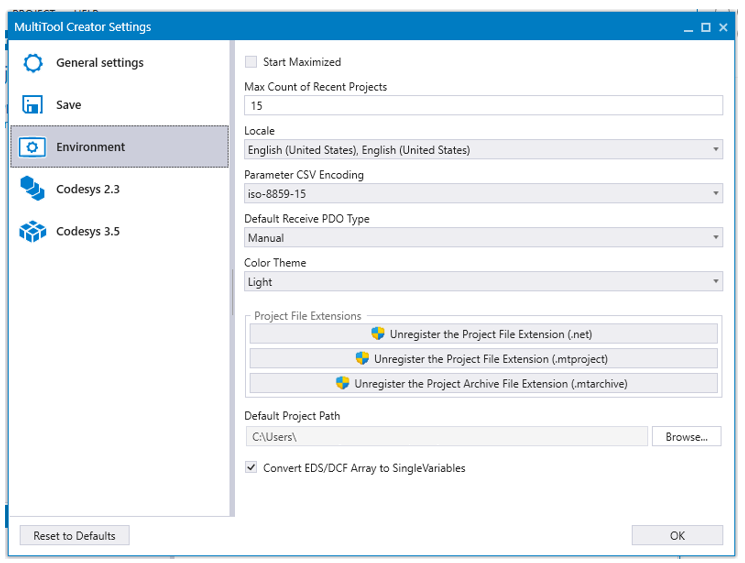
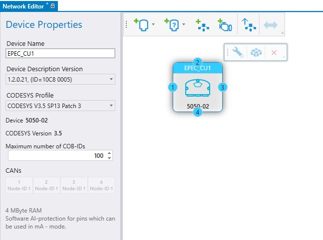
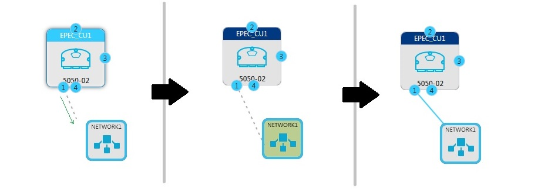
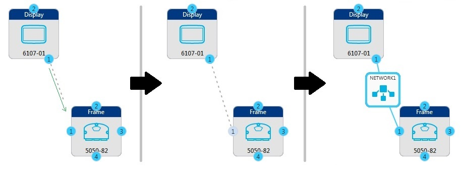
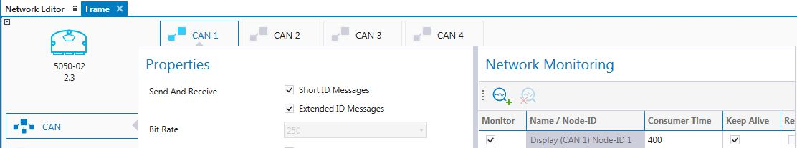
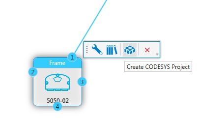
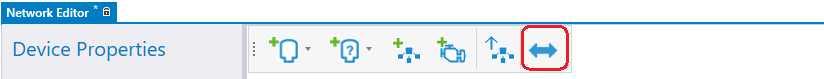

icon from the hover menu
icon from the hover menu
This example describes the steps to create a simple MultiTool Creator project.
1. Create a New Project from Start Page or using File menu
MultiTool Creator automatically creates a project folder with the project name.
The project folder will be created to the default path. The project path can be changed by selecting Browse...
To change the suggested default project path, open MultiTool Creator Settings File > Settings > Environment > Default Project Path

2. Add the device(s) selecting Add Device icon
At this point, the device type, functional version and used CODESYS version should be known. MultiTool Creator adds a device template that is ready to be configured.
MultiTool Creator automatically creates names for the devices, but they can also be renamed. It is always recommended to rename the devices to describe their functionality in the system. To rename the device, select the device and change the name in Device Properties > Device Name (see the following image).

3. Save the project from the File menu or with CTRL+S.
4. The network definition is needed if the system includes several devices. Add new network with Add Network icon. Connecting the device(s) to a network can be done in two ways:
(a). Dragging a CAN channel to the network:
Select a CAN channel from the device and drag >> Drag the cursor on a network >> The connection is added

or (b). A network between two devices is easily done by dragging a CAN channel from device to another device's CAN icon:
Select a CAN channel from the device and drag >> Drag the cursor on another device's CAN channel >> A network is created

5. Double-click the device to configure it. The device Configuration opens as a new tab next to the Network Editor
Select the used Application Node-ID on the CAN tab
Select the device to be an NMT master in the network on the CAN tab
Select monitored nodes on the CAN tab
Add variables and parameters to index(es) and subindex(es) on the Object Dictionary tab
Define the variables to be transmitted in PDOs for other devices on the PDO tab

6. To create the CODESYS project directly from MultiTool Creator, select the device and press icon from the hover menu
Create CODESYS Project launches CODESYS, creates a project template and imports all MultiTool Creator configurations to the code template.

For more information about the steps to be done in CODESYS, see
Updating MultiTool Creator Configurations to CODESYS Project
Epec Programming and Libraries Manual > Getting Started > Getting Started with CODESYS and Epec Products
See also
7. To start CODESYS 3.5 CAN Gateway application press icon from the menu.

CODESYS 3.5 CAN gateway is a application that enables CAN bus based connection from CODESYS 3.5 IDE to Epec device.
For more information about CODESYS 3.5 CAN gateway, see
Epec Programming and Libraries Manual > Getting Started > CODESYS 3.5 CAN gateway
|
|
CODESYS 3.5 CAN gateway button is disabled if MultiTool Creator project does not contain any CODESYS 3.5 device connected to network. |
Epec Oy reserves all rights for improvements without prior notice.
Source file 4_Quick_Start_Guide.htm
Last updated 25-Jun-2025